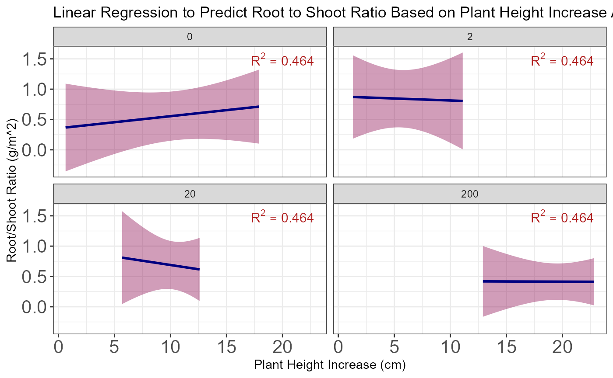

Tutorial.RmdToday we will be installing an R package that will help us process and prepare raw data to be analyzed. This data is resulting from an experiment on the wetland plant Juncus effusus, looking at the response to differing doses of ammonium. The goal of this package is to help us create useful biomass and height increase information based on this raw data, and then analyze the two to see if plant height increase can predict biomass increase. First lets install the package from github using the below code.
devtools::install_github("tesseracrockett/crockett.pkg")## Downloading GitHub repo tesseracrockett/crockett.pkg@HEAD##
##
checking for file 'C:\Users\Tessera\AppData\Local\Temp\RtmpusS3ue\remotes4228719e63c7\tesseracrockett-crockett.pkg-3d2f217/DESCRIPTION' ...
checking for file 'C:\Users\Tessera\AppData\Local\Temp\RtmpusS3ue\remotes4228719e63c7\tesseracrockett-crockett.pkg-3d2f217/DESCRIPTION' ... OK
v checking for file 'C:\Users\Tessera\AppData\Local\Temp\RtmpusS3ue\remotes4228719e63c7\tesseracrockett-crockett.pkg-3d2f217/DESCRIPTION' (681ms)
##
- preparing 'crockett.package':
## checking DESCRIPTION meta-information ...
checking DESCRIPTION meta-information ...
v checking DESCRIPTION meta-information
##
- checking for LF line-endings in source and make files and shell scripts
##
- checking for empty or unneeded directories
##
- building 'crockett.package_0.1.0.tar.gz'
##
## ## Installing package into 'C:/Users/Tessera/AppData/Local/Temp/Rtmp6RttEa/temp_libpath3878348b4139'
## (as 'lib' is unspecified)Before we look at each function, make sure to load the package into your local or studio version of R.
library(crockett.package)Alone, above_ground or belowground biomass are not particularly reflective of what a given plant may have experienced during it’s growth season, however root to shoot ratio, a ratio (belowground/above_ground) that includes both pieces of plant growth information, can be very informative. Having a function to compute this ratio into a new column that can then be analyzed helps prevent errors typically found in hand calculations and provides this information quickly. The expected inputs are specific to the tibble (dataframe) “ecotox” and are the above_ground and belowground columns, which is biomass weight in grams. The expected output is a new column that has calculated the root to shoot ratio for each sample, the closer to 1, the closer the plant was to having equal roots to shoots.
Now lets load in the data frame and run this function.
## -- Attaching packages --------------------------------------- tidyverse 1.3.0 --## v ggplot2 3.3.2 v purrr 0.3.4
## v tibble 3.0.4 v dplyr 1.0.2
## v tidyr 1.1.2 v stringr 1.4.0
## v readr 1.4.0 v forcats 0.5.0## -- Conflicts ------------------------------------------ tidyverse_conflicts() --
## x dplyr::filter() masks stats::filter()
## x dplyr::lag() masks stats::lag()
ecotox <- read_csv("../inst/extdata/ecotox.csv")##
## -- Column specification --------------------------------------------------------
## cols(
## ID = col_character(),
## DOSE = col_double(),
## ABOVE_GROUND = col_double(),
## BELOWGROUND = col_double(),
## HEIGHT_I = col_double(),
## HEIGHT_F = col_double()
## )
calc_rootshoot_ratio(data = ecotox, BELOWGROUND = ecotox$BELOWGROUND, ABOVE_GROUND = ecotox$ABOVE_GROUND)## # A tibble: 16 x 7
## ID DOSE ABOVE_GROUND BELOWGROUND HEIGHT_I HEIGHT_F rs_ratio
## <chr> <dbl> <dbl> <dbl> <dbl> <dbl> <dbl>
## 1 CA 0 3.32 2.94 36.2 54.1 0.886
## 2 CB 0 3.2 1.36 43.2 43.8 0.425
## 3 CC 0 3.16 1.52 42.6 51.0 0.481
## 4 CD 0 3.08 1.42 41.3 56.0 0.461
## 5 D2A 2 7.02 4.5 45.1 56.2 0.641
## 6 D2B 2 3.46 3.04 41.3 43.4 0.879
## 7 D2C 2 3.86 3 43.8 45.1 0.777
## 8 D2D 2 4.06 4.36 39.4 47.2 1.07
## 9 D20A 20 5.48 2.88 45.7 58.0 0.526
## 10 D20B 20 5.64 3.14 41.3 53.9 0.557
## 11 D20C 20 6.16 5.54 45.7 56.2 0.899
## 12 D20D 20 5.12 3.82 46.4 52.0 0.746
## 13 D200A 200 10.9 5.58 42.6 65.4 0.510
## 14 D200B 200 8.72 2.24 43.2 65.5 0.257
## 15 D200C 200 4.96 2.4 41.9 62.0 0.484
## 16 D200D 200 6.74 2.74 44.4 57.4 0.407
ecotox <- calc_rootshoot_ratio(data = ecotox, BELOWGROUND = ecotox$BELOWGROUND, ABOVE_GROUND = ecotox$ABOVE_GROUND)You should be seeing our tibble “ecotox” with the new column “rs_ratio”.
Let’s take a look at the next function in this package.
Our raw data provides us with the initial and final height of the plant, however in order to better analyze our data and compare to other information such as biomass, we need to determine the difference in plant height from initial to final height measurements taken. Running this function helps prevent errors in hand calculations or calculations by rows. The expected inputs are specific to the tibble (dataframe) “ecotox” and include the “HEIGHT_I” and “HEIGHT_F” columns, which are both reported in centimeters. Programmed in this function is a test to make sure that the data provided from the height columns are indeed numerical (no blanks or alphabetical entries). The expected output is a new column titled “fh_diff” which has calculated the difference in the initial and final height of the plant, in centimeters.
Now, let’s process our second function.
summary(ecotox)## ID DOSE ABOVE_GROUND BELOWGROUND
## Length:16 Min. : 0.0 Min. : 3.080 Min. :1.360
## Class :character 1st Qu.: 1.5 1st Qu.: 3.425 1st Qu.:2.360
## Mode :character Median : 11.0 Median : 5.040 Median :2.970
## Mean : 55.5 Mean : 5.308 Mean :3.155
## 3rd Qu.: 65.0 3rd Qu.: 6.305 3rd Qu.:3.955
## Max. :200.0 Max. :10.940 Max. :5.580
## HEIGHT_I HEIGHT_F rs_ratio
## Min. :36.20 Min. :43.38 Min. :0.2569
## 1st Qu.:41.28 1st Qu.:50.03 1st Qu.:0.4760
## Median :42.87 Median :55.08 Median :0.5411
## Mean :42.75 Mean :54.19 Mean :0.6255
## 3rd Qu.:44.61 3rd Qu.:57.50 3rd Qu.:0.8026
## Max. :46.36 Max. :65.52 Max. :1.0739
calc_finalheight_diff(data = ecotox, HEIGHT_F = ecotox$HEIGHT_F, HEIGHT_I = ecotox$HEIGHT_I)## # A tibble: 16 x 8
## ID DOSE ABOVE_GROUND BELOWGROUND HEIGHT_I HEIGHT_F rs_ratio fh_diff
## <chr> <dbl> <dbl> <dbl> <dbl> <dbl> <dbl> <dbl>
## 1 CA 0 3.32 2.94 36.2 54.1 0.886 17.9
## 2 CB 0 3.2 1.36 43.2 43.8 0.425 0.64
## 3 CC 0 3.16 1.52 42.6 51.0 0.481 8.43
## 4 CD 0 3.08 1.42 41.3 56.0 0.461 14.8
## 5 D2A 2 7.02 4.5 45.1 56.2 0.641 11.1
## 6 D2B 2 3.46 3.04 41.3 43.4 0.879 2.1
## 7 D2C 2 3.86 3 43.8 45.1 0.777 1.30
## 8 D2D 2 4.06 4.36 39.4 47.2 1.07 7.83
## 9 D20A 20 5.48 2.88 45.7 58.0 0.526 12.2
## 10 D20B 20 5.64 3.14 41.3 53.9 0.557 12.6
## 11 D20C 20 6.16 5.54 45.7 56.2 0.899 10.5
## 12 D20D 20 5.12 3.82 46.4 52.0 0.746 5.69
## 13 D200A 200 10.9 5.58 42.6 65.4 0.510 22.8
## 14 D200B 200 8.72 2.24 43.2 65.5 0.257 22.3
## 15 D200C 200 4.96 2.4 41.9 62.0 0.484 20.0
## 16 D200D 200 6.74 2.74 44.4 57.4 0.407 12.9
ecotox <- calc_finalheight_diff(data = ecotox, HEIGHT_F = ecotox$HEIGHT_F, HEIGHT_I = ecotox$HEIGHT_I)You should see first a summary of our tibble with our “rs_ratio” column, and secondly our tibble with our new column “fh_diff”.
Next, let’s take a look at our final function.
When working with plant data, it is helpful to see if there are visual cues (such as growth, leaf or shoot health, etc…) that can predict and inform us further about the plant. Here we look at plant height increase as a predictor for the root/shoot ratio, i.e. total biomass ratio, across the dose of ammonium received by samples. This analysis is a great visual for those that are unfamiliar with plant processes in general, especially in relation to nutrient dosing. Let us see if we fit the right model.
summary(ecotox)## ID DOSE ABOVE_GROUND BELOWGROUND
## Length:16 Min. : 0.0 Min. : 3.080 Min. :1.360
## Class :character 1st Qu.: 1.5 1st Qu.: 3.425 1st Qu.:2.360
## Mode :character Median : 11.0 Median : 5.040 Median :2.970
## Mean : 55.5 Mean : 5.308 Mean :3.155
## 3rd Qu.: 65.0 3rd Qu.: 6.305 3rd Qu.:3.955
## Max. :200.0 Max. :10.940 Max. :5.580
## HEIGHT_I HEIGHT_F rs_ratio fh_diff
## Min. :36.20 Min. :43.38 Min. :0.2569 Min. : 0.640
## 1st Qu.:41.28 1st Qu.:50.03 1st Qu.:0.4760 1st Qu.: 7.295
## Median :42.87 Median :55.08 Median :0.5411 Median :11.665
## Mean :42.75 Mean :54.19 Mean :0.6255 Mean :11.447
## 3rd Qu.:44.61 3rd Qu.:57.50 3rd Qu.:0.8026 3rd Qu.:15.553
## Max. :46.36 Max. :65.52 Max. :1.0739 Max. :22.830
ecotox_lin_reg(data = ecotox, rs_ratio = ecotox$rs_ratio,
fh_diff = ecotox$fh_diff,
DOSE = ecotox$DOSE, lm = lm(rs_ratio~fh_diff, ecotox))## `geom_smooth()` using formula 'y ~ x' As we see here, the model does fit when the plant samples receive no nutrient; plant height is a predictor of root to shoot ratio. However as plant samples receive differing doses of 2, 20, and 200 ppm ammonium, it becomes clear that plant height increase is a not an accurate or reliable predictor of root to shoot ratio. This can also be seen by our R value, which tells us that only about 46% of the root to shoot ratio of a plant sample is explained by plant height increase; there is a relationship here, but it is not very strong. Further analysis of this data should include an ANOVA.